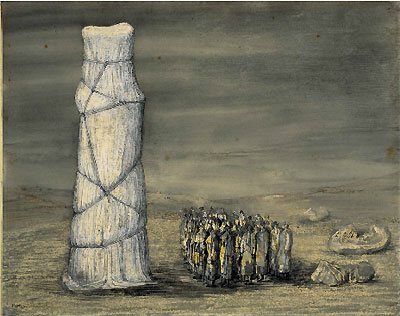

|
Henry
Moore (1898-1986)
Born in Castleford,
Yorkshire, the son of a miner, Henry Moore showed promise at an
early age, winning a scholarship to the local grammar school. In
1917 he travelled to London to enlist in the 15th London Regiment
(Civil Service Rifles), making his first visit to the British Museum.
He was sent to France and was later gassed at the Battle of Cambrai.
In 1919 he returned to Yorkshire to attend Leeds College of Art
where he was the first student to study sculpture. Two years later
Moore won a scholarship to the Royal College of Art. In London he
drew extensively from sculpture in the British Museum, including
material from the ethnographic collections. His first visit to Paris
was in 1923, followed in 1925 with an extensive tour of the major
places in central and northern Italy. On his return he resumed teaching
at the RCA, and began studying bones at the Natural History Museum
and different types of English stone at the Geological Museum; this
led to his first transformation drawings of 1926, based on analogies
between natural forms and the human figure.
Moore's first
one-man show was at the Warren Gallery in London in 1928. In 1929
he married Irina Radetsky, a painting student at the RCA, as well
as completing his reclining figure inspired by a reproduction of
a carving of the Mexican rain-spirit Chacmool. The thirties saw
Moore increasingly associated with avant-garde groups such as the
7 and 5 Society and Unit One, formed by Paul Nash. By the end of
the decade modelling and casting had begun to take precedence over
direct carving for his sculpture. Drawing continued to play a vital
role in his work, becoming of paramount importance during the early
years of the Second World War, when he produced some of his most
powerful and moving drawings, studies of Londoners sheltering from
the Blitz in the Underground. Moore
described his feelings on first seeing the figures in the Underground:
I spent the time looking at the rows of people sleeping on the platforms.
I had never seen so many reclining figures, and even the train tunnels
seemed to be like the holes in my sculpture.
.
Left: Crowd Looking at a Tied-Up Object, 1942. Graphite,
coloured chalks and grey wash, 442 x 571 mm 1988-3-5-7.
Accepted by H M Government in lieu of tax on the estate of the late
Lord Clark of Saltwood and allocated to The British Museum
© The Henry Moore Foundation nry
Moore
Foundation
He was subsequently
appointed as an official war artist by the War Artists' Advisory
Committee under the chairmanship of Sir Kenneth Clark. Moore returned
to sculpture with the Madonna and Child, commissioned for
St Matthew's Church, Northampton and unveiled in February 1944.
After the War he produced various public commissions; one of the
most prestigious was a sculpture for the new UNESCO headquarters
in Paris, installed in 1958, for which the British Museum owns preparatory
drawings.
Drawings
The
British Museum has thirty-five drawings by Henry Moore, the majority
of which were presented by the artist himself or by Lord Clark.
In addition, Jane, Lady Clark, bequeathed in 1977 the first of the
Shelter Sketchbooks, dating from the latter end of 1940,
while nine of the single-sheet drawings were acquired in 1988 from
the estate of Lord Clark after they had been accepted in lieu of
tax by the Commissioners of the Inland Revenue. The most famous
of these is the compositions Crowd Looking at a Tied-up Object
of 1942.
The collection
in the Department of Prints and Drawings covers most of Moore's
career. Several drawings of monumental nudes date from the 1920s.
Drawings from the thirties are mostly ideas for metal or stone sculpture.
After he had
completed the Shelter drawings in 1941, Moore visited the Wheldale
Colliery in his hometown of Castleford, where he recorded the miners
at work. The British Museum possesses five of sheets from the coalmining
sketchbook. A double-page drawing by Moore of helmet heads, executed
in 1950, appears in the Visitors' Book for the Institute of Contemporary
Arts, which belongs to the Museum.
Prints
Among
the material owned by the British Museum is a set of Moore's early
collographs plus working proofs; his lithograph for the third series
of School Prints, Sculptural Objects of 1949, and three of
his illustrated portfolios: Goethe's Promethée, translated
by André Gide, 1950 (eight lithographs); Elephant Skull,
1970 (twenty-five etchings); Selections from poems by Auden,
1974 (twenty-one lithographs). The main repositories of his prints
belong to Tate in London and to the Henry Moore Foundation at Much
Hadham in Herts.
Other Collections
| London
|
Tate |
| |
Victoria
and Albert Museum |
| UK |
The
Henry Moore Institute, Leeds |
| |
The
Henry Moore Foundation, Much Hadham, Hertfordshire |
| Canada |
Art
Gallery of Ontario, Toronto |
| USA |
Museum
of Modern Art, New York |
Further Reading
Auden Poems/Moore Lithographs. British Museum Press,
1974
Berthoud, R.
The Life of Henry Moore. Faber and Faber, 1987
Carey, F. Henry
Moore: A Shelter Sketchbook. British Museum Press, 1988
Compton, S.
ed. Henry Moore. Royal Academy, 1988
Cramer, G.
et al. Henry Moore Catalogue of Graphic Work. Galerie Gérald
Cramer, 1973 and 1976
Finn, D. Henry
Moore at the British Museum. British Museum Press, 1981
Garrould, A.
ed. Henry Moore: Complete Drawings. 6 Vols. Lund Humphries,
1994
Kosinski, D.
ed. Henry Moore: Sculpting the 20th Century. Dallas Museum
of Art, 2001
Wilkinson, A.
The Drawings of Henry Moore. Tate Gallery Publications, 1978
|